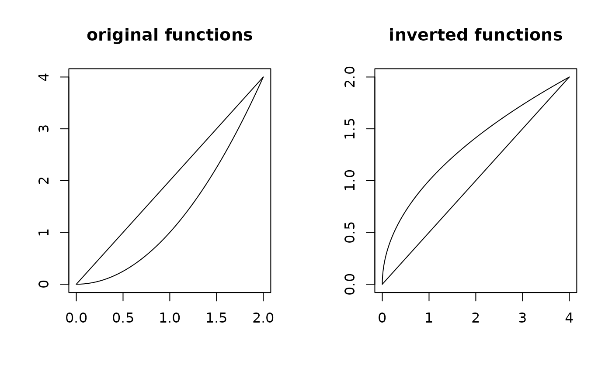

Computes the functional inverse of each function in the tf vector, such that
if \(y = f(x)\), then \(x = f^{-1}(y)\).
Arguments
- x
a tf vector.
- ...
optional arguments for the returned object, see tfd() / tfb()
Value
a tf vector of the inverted functions.
Examples
arg <- seq(0, 2, length.out = 50)
x <- tfd(rbind(2 * arg, arg^2), arg = arg)
x_inv <- tf_invert(x)
layout(t(1:2))
plot(x, main = "original functions", ylab = "")
plot(x_inv, main = "inverted functions", ylab = "", points = FALSE)
